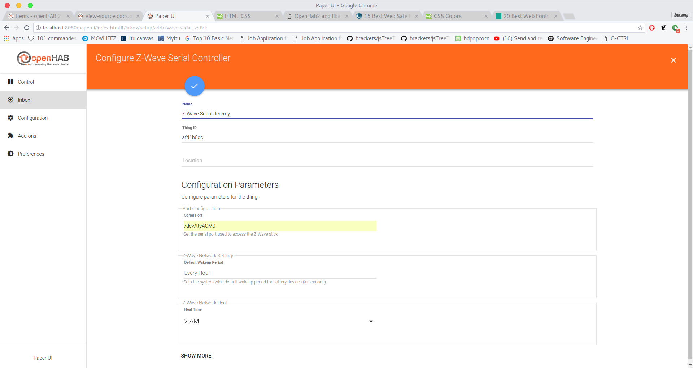
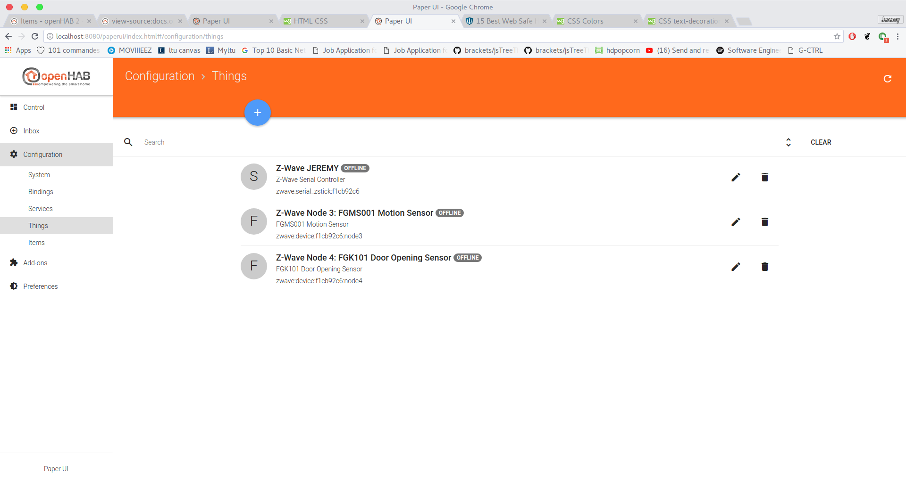
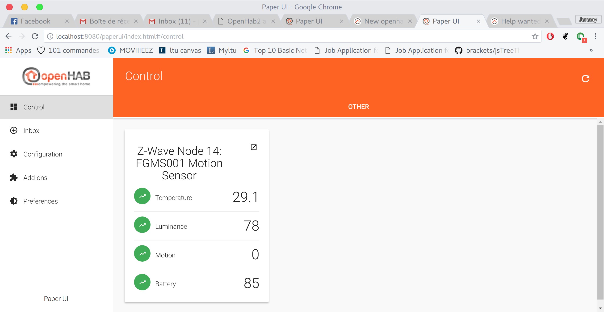

I did all of this procedure on my laptop, which runs ubuntu 16.04, this has been tested on a raspberrypi too. Some parts might differ on other platforms.
First,you need to install openhab 2. Just follow the procedure given on the openHab's website. It's pretty straight forward. OpenHab will be installed in /usr/share/openhab2/ . Once it's installed, you can launch it either running the command given on the installation page, either by running "sudo /usr/share/openhab2/start.sh"
Once you've launched openHab, try to connect to localhost:8080
The first setup might take some time, so don't worry if doesn't display anything first.
When you first connect to your openhab, it will ask you to choose a package. I would recommend the expert package so you can access habmin. (you can also choose the standard package and later install habmin though the paper ui (addons>User Interfaces>habmin>install))
This part can get a bit tricky if you don't use the command line very often. (It's not that complicated though, but I had some troubles doing it the first time).
Open a terminal and run the following command : "ls /dev/tty*". (you don't really have to do it but it is easier to see what your stick's name is if you do it). Plug your z-stick and run the command again. Your z-stick's name should be something like ttyACM0, depending on the Zstick you are using it can also be /dev/ttyUSB0. You now have to modify the permission of the stick (sudo chmod 777/dev/{yourZstickName} (alright this is ugly, but i don't remember the exact permission at the time I'm writing this, maybe 754 could be ok)).
Next step is to add the user openhab to the dialout group. You can do it running the following command: "sudo usermod -a -G dialout openhab".
If your z-stick was registered as ttyUSB*, you might be able to skip this step, BUT I haven't tested it, so I would not recommend that you do that.
Now, go to the openhab interface and select PaperUI.
Go to addons. Select the bindings section, and search for "Z-wave binding", and install it.
Once you've installed it, go to the inbox section, and click on the "search for things" button.
Then click on "Z-Wave binding". And then on add manually. You will get to a new page to configure your z-stick. You only need to set one field, but I would recommend you to also change the name of the stick if you have multiple sticks nearby. In the "Serial port" field, enter the absolute path to your Z-Stick (in my case it was /dev/ttyACM0). And your Stick should be up and running now!

Once you get your Z-Stick connected to OpenHab, you can connect your sensors. You will need to get your sensors close to the z-stick and press the sensor's button three times. It should then appear in your inbox category in the paperUI. You will need to click the button next to the thing's name. Then your thing will appear in the Configuration>Things menu. 
To be able to get data from your sensors, you will need to create a *.items file. The *.items files should be located in /etc/openhab2/items/ directory. You will need to know what kind of data you want to get from your sensor. For a doorsensor for example you can extract a number (0 or 1). You will also need the name of the channel from which you extract the data (some sensors have multiple channels). Here is the syntax that you should follow to write your *.items file Syntax to follow. Here are the config files that I used to get my sensors showing data in the control panel: Door Sensor 4 in 1 sensor
You will need to put inside the binding part the channel corresponding to your sensor. To get it, go to your things menu in the paperui and select your sensor, then all the channels will be displayed, copy paste it in the corresponding part in your *items file.

That's it! you can now see your values from your sensor in the "control" panel.